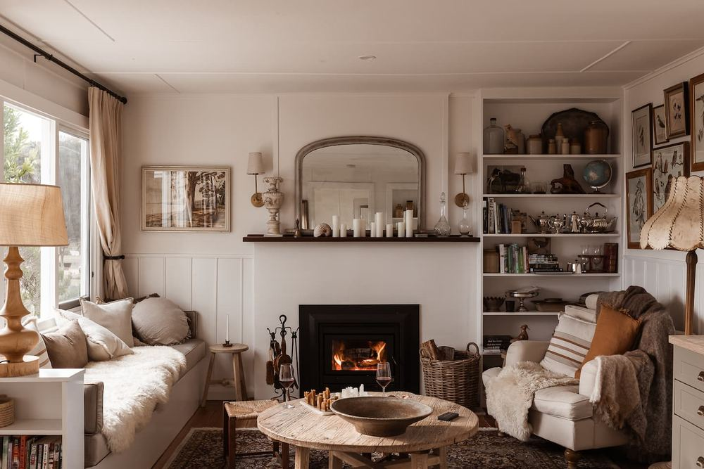
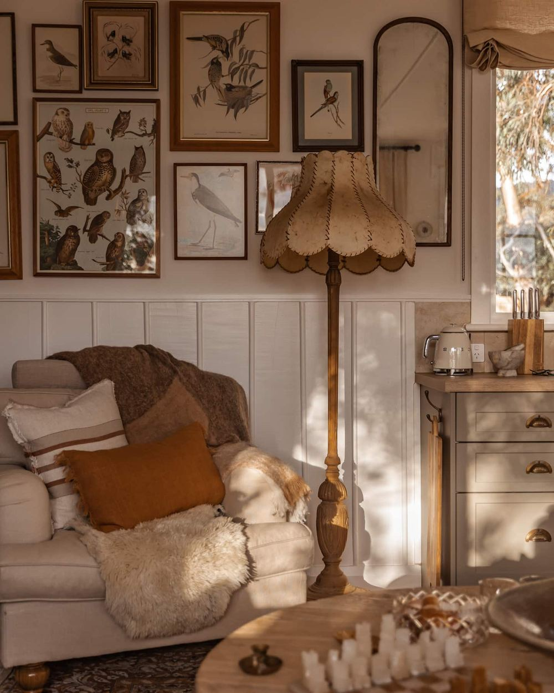
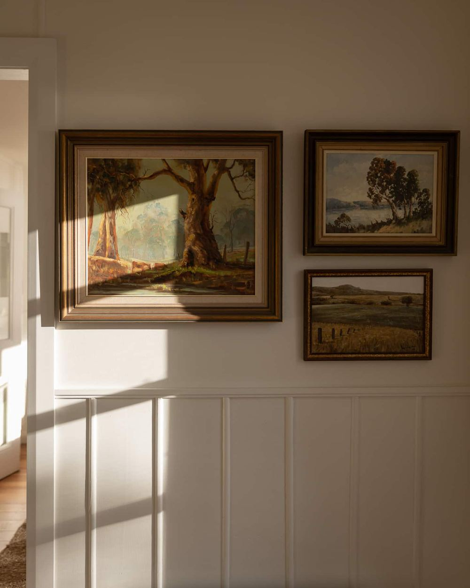

A shack with a few stories
Alice and Luke found her on this corner of Bruny and gave her a new chapter: a little restoration, a lot of hunting for old treasures, and second-hand lamps, prints and silverware collected from far and wide.
"Built in the 1960s, she had a good few stories to tell long before we came along. We wanted to give her a new chapter, without taking away too much of the old."
Alice and Luke, on Instagram, November 2026


